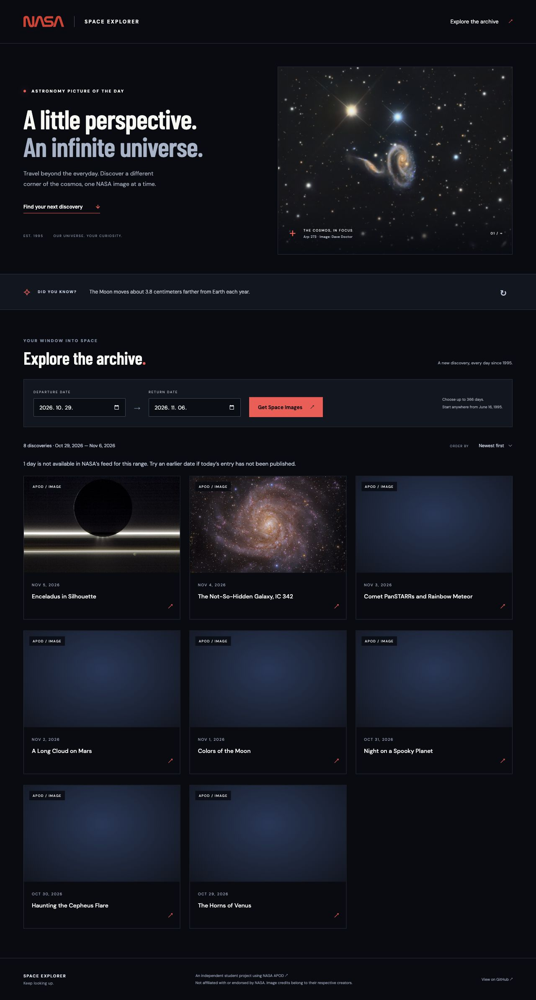

Treat failure as a user flow
Loading and retry states keep a temporary API failure from becoming a blank page.
WEB DEVELOPMENT · COURSE PROJECT
Explore an astronomy archive with clearer loading, discovery, and detail views.

A date-based image archive needs more than a successful fetch. People need to understand what is loading, handle missing data, and inspect individual entries.
A responsive Astronomy Picture of the Day explorer with date-range selection, sorting, image details, and recovery states. The repository includes DOM tests and a test-before-deploy Pages workflow.
Loading and retry states keep a temporary API failure from becoming a blank page.
Accessible detail dialogs provide an alternative to relying on image clicks alone.
The application provides a fallback feed when API access is limited. Public demo availability and external API availability are separate concerns.
The live educational site, source, screenshot, and test configuration are public.
Error handling and keyboard interaction are part of the experience, even in a small API-based project.
Built from a Global Career Accelerator classroom starter using NASA’s public API. This is not employment, a commission, or an official NASA product.
Keep validating date boundaries and external API failure behavior as the archive changes.